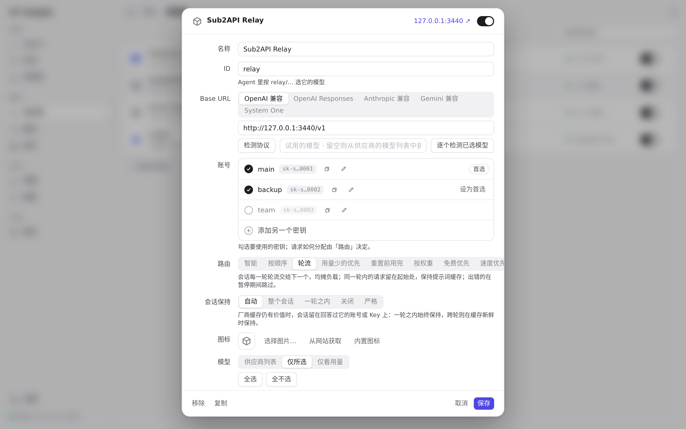
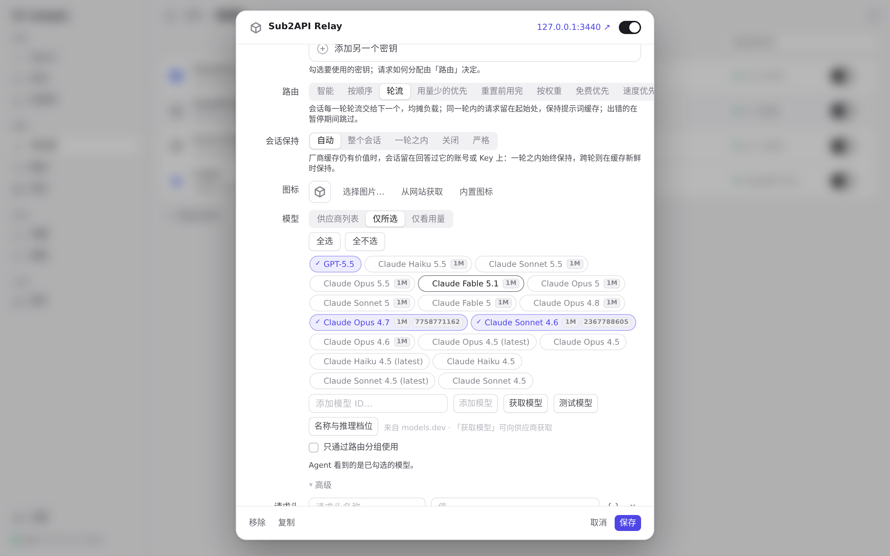
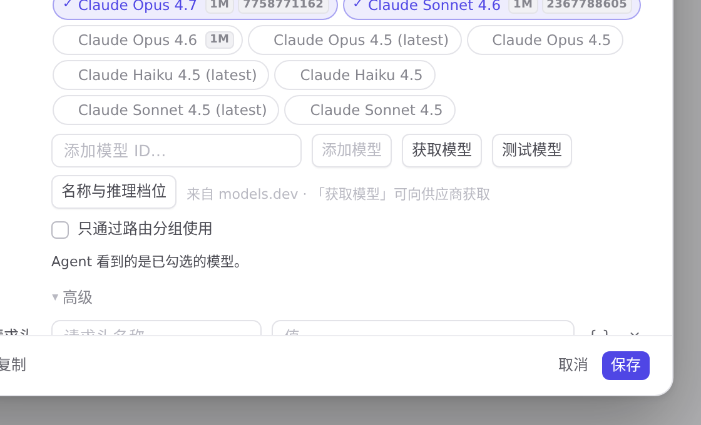

#2 界面预览
commit bc8f62c · 回到 PR · 本次唯一的界面改动是供应商编辑弹窗里「压缩」（Codex 原生压缩）开关下方的说明文案：由“压缩过的对话只能在同一服务商和账号上继续”改为“官方 Codex 账号可在账号池内其他符合条件的账号上继续，其他服务商仍绑定原写入方，检查点不会被丢弃”；中文、繁体、日、德四套文案同步更新。其余改动都在网关内部（额度等待与恢复、SSE keepalive、检查点跨账号续接），不产生新的界面元素。
红线是鼠标走过的轨迹，红色圆环是一次点击；底部文字是这一步在做什么。空格暂停，← → 逐段查看。

供应商的「压缩」说明文案 · 供应商编辑弹窗打开后的样子

供应商的「压缩」说明文案 · 「压缩」开关及其下方的说明文案

供应商的「压缩」说明文案 · 「压缩」设置项与其说明文字（放大）